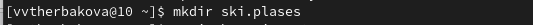
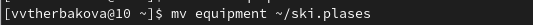
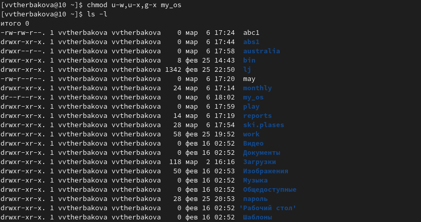
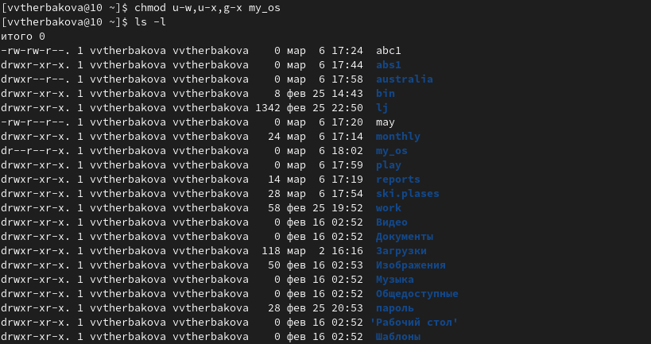

| ## Front matter lang: ru-RU title:лабораторная работа №5 subtitle: Операционные системы - Щербакова Вероника НБИбд-03-22 institute: - Российский университет дружбы народов, Москва, Россия |
| date: 6 марта 2023г. |
| ## i18n babel babel-lang: russian babel-otherlangs: english |
| ## Formatting pdf toc: false toc-title: Содержание slide_level: 2 aspectratio: 169 section-titles: true theme: metropolis header-includes: - - ‘’ - ‘’ - ‘’ |
Информация
Докладчик
- Щербакова Вероника Владимировна
- ученица 1 курса
- НБИбд-03-22
- Российский университет дружбы народов
Вводная часть
Актуальность
Объект и предмет исследования
Цели и задачи
Ознакомление с файловой системой Linux, её структурой, именами и содержанием каталогов. Приобретение практических навыков по применению команд для работы с файлами и каталогами, по управлению процессами (и работами), по проверке исполь- зования диска и обслуживанию файловой системы.
Материалы и методы
- Процессор
pandoc для входного формата Markdown
- Результирующие форматы
- Автоматизация процесса создания:
Makefile
Создание презентации
Процессор pandoc
Формат pdf
- Использование LaTeX
- Пакет для презентации: beamer
- Тема оформления:
metropolis
Код для формата pdf
slide_level: 2
aspectratio: 169
section-titles: true
theme: metropolis
Формат html
Код для формата html
- Тема задаётся в файле
Makefile
REVEALJS_THEME = beige
Результаты
Получающиеся форматы
- Полученный
pdf-файл можно демонстрировать в любой программе просмотра pdf
- Полученный
html-файл содержит в себе все ресурсы: изображения, css, скрипты
Элементы презентации
Актуальность
- Даёт понять, о чём пойдёт речь
- Следует широко и кратко описать проблему
- Мотивировать свое исследование
- Сформулировать цели и задачи
- Возможна формулировка ожидаемых результатов
Цели и задачи
- Не формулируйте более 1–2 целей исследования
Материалы и методы
- Представляйте данные качественно
- Количественно, только если крайне необходимо
- Излишние детали не нужны
Содержание исследования
Выполните все примеры, приведённые в первой части описания лабораторной работы (рис.[-@fig:001]) 
- Скопируйте файл /usr/include/sys/io.h в домашний каталог и назовите его equipment. (рис.[-@fig:002])


- домашнем каталоге создайте директорию ~/ski.plases (рис.[-@fig:004]) 
- Переместите файл equipment в каталог ~/ski.plases.(рис.[-@fig:005]) 
- Переименуйте файл ~/ski.plases/equipment в ~/ski.plases/equiplis(рис.[-@fig:006])

- Создайте в домашнем каталоге файл abc1 и скопируйте его в каталог ~/ski.plases, назовите его equiplist2(рис.[-@fig:007])

- Создайте каталог с именем equipment в каталоге ~/ski.plases:
- Переместите файлы ~/ski.plases/equiplist и equiplist2 в каталог ~/ski.plases/equipment:
- Создайте и переместите каталог ~/newdir в каталог ~/ski.plases и назовите его plans:(рис.[-@fig:008])

Определите опции команды chmod, необходимые для того, чтобы присвоить перечис- ленным ниже файлам выделенные права доступа, считая, что в начале таких прав нет
- drwxr–r– … australia и drwx–x–x … play(рис.[-@fig:009])

- -r-xr–r– … my_os(рис.[-@fig:010])
 

- -rw-rw-r– … feathers(рис.[-@fig:012])

Проделайте приведённые ниже упражнения, записывая в отчёт по лабораторной работе используемые при этом команды
- росмотрите содержимое файла /etc/password(Данного файла нет) 2.копируйте файл ~/feathers в файл ~/file.old.
- Переместите файл ~/file.old в каталог ~/play.
- Скопируйте каталог ~/play в каталог ~/fun.
- Переместите каталог ~/fun в каталог ~/play и назовите его games.
- Лишите владельца файла ~/feathers права на чтение.
- Что произойдёт, если вы попытаетесь просмотреть файл ~/feathers командой cat?
- Что произойдёт, если вы попытаетесь скопировать файл ~/feathers?
- Дайте владельцу файла ~/feathers право на чтение.
- Лишите владельца каталога ~/play права на выполнение.
- Перейдите в каталог ~/play. Что произошло?
- Дайте владельцу каталога ~/play право на выполнение.(рис.[-@fig:013])

Прочитайте man по командам mount, fsck, mkfs, kill(рис.[-@fig:014]) 


Результаты
Ознакомились с файловой системой Linux, её структурой, именами и содержанием каталогов
Итоговый слайд
Спасибо за внимание
:::